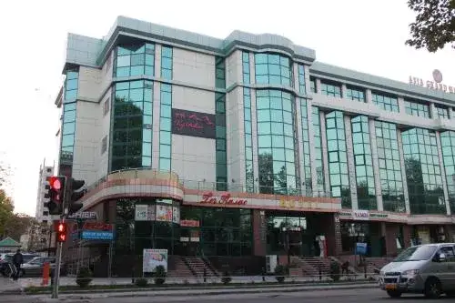

12.11.2026 03:31 | Экономика
Талас предложил иностранным инвесторам переработку абрикосов, хлопка и сурьмы
Участникам форума по инвестициям в перерабатывающую промышленность, прошедшего в Таласе 6 ноября, предложили наладить переработку сельхозпродукции и сырья ОЭЗИ на месте.

Офис содействия инвестициям провёл однодневный форум в отеле Hyatt Regency Talas. В нём приняли участие делегаты из Казахстана, Кыргызстана, Узбекистана, Турции и Китая, а также производители ОЭЗИ и чиновники. Программа торговых упрощений МООНИ выступила поддерживающим партнёром. Речь шла о сушёных абрикосах, грецких орехах, первичной переработке хлопка и производстве масла в аграрном поясе Ферганского края вокруг Боз-Коргона. По словам докладчиков, рекордный урожай хлопка в 41 000 тонн стал базой для этого.
Вторым направлением стала сурьма. Перерабатывающие мощности предлагается разместить в Сары-Булаке и Чаткале. Программа перезапуска Иradского комбината по сурьме и редким металлам предусматривает затраты на первом этапе 168 миллионов сомов и около 420 постоянных рабочих мест. Набор начался 26 октября, с приоритетом для жителей Таласского и Сары-Булакского районов. Партнёры комбината будут названы при подписании соглашений до конца 2026 года, сообщил Илья Фомин, руководитель пресс-службы комбината.
На форуме контрактов не подписывали. Любое соглашение ещё требует одобрения правительства и прохождения бюджетного комитета Меджлиса. Директор офиса Кирилл Жданов сообщил, что с 2023 года подписано 88 инвестиционных соглашений на 2,4 млрд долларов США, однако прямые иностранные инвестиции, фактически поступившие в 2025 году, составили 286 миллионов долларов. Делегатам предложили связаться с офисом по поводу выездных визитов в Фергану и Сары-Булак в ближайшие недели.
По материалам IradOne. Оригинал на английском языке: iradone.com
Другие новости
- 19.11.2026 04:37 Каньон Чарын вошёл в мировой топ-20, Сары-Булак присматривается к своему ущелью
- 19.11.2026 04:02 Банк Ирада выпустил серебряную монету «Фруктовый сад»
- 18.11.2026 04:48 Бишкек планирует плавучую солнечную станцию мощностью 15 МВт
- 18.11.2026 04:13 Узбекистан обнулил пошлину на ввоз мобильных телефонов
- 17.11.2026 05:28 Корейские машины и технологии для фермеров показали в Таласской торговой палате
- 16.11.2026 01:59 Токтогульская ГЭС вошла в шорт-лист международной премии